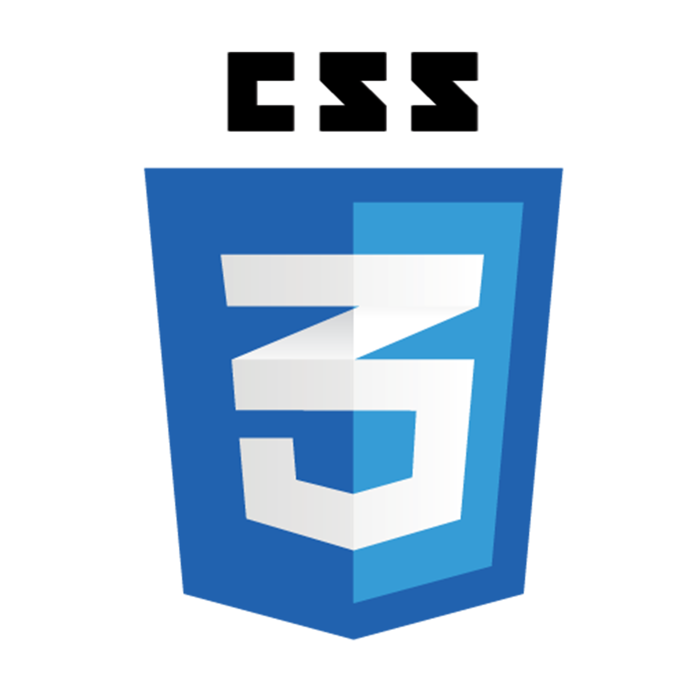
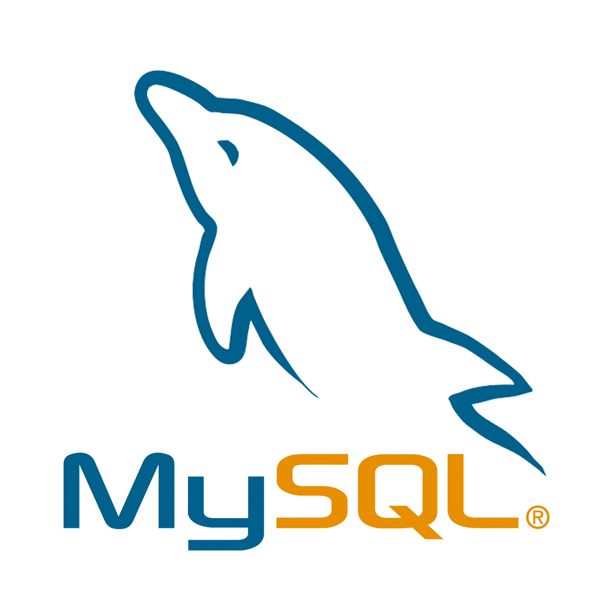

TECH STACK
FRONT END


BACK END
TECHNICAL SKILLS
- Adobe Photoshop
- Adobe Illustrator
- Adobe Premiere
- Office 365
- Advance MS Excel
- Graphic Designing
- Troubleshooting
- Problem Solving
- Googling